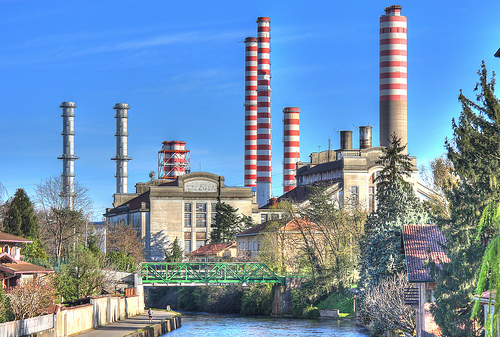

| Centrale Elettrica |
Una centrale elettrica è un impianto industriale atto alla produzione di energia elettrica. La società moderna si basa in maniera imprescindibile sull'uso dell'energia elettrica, perciò la produzione di tale energia e, conseguentemente, le centrali elettriche hanno un'importanza tecnologica e strategica fondamentale. Le centrali elettriche odierne producono energia quasi esclusivamente in corrente alternata avvalendosi di macchine elettriche denominate alternatori. Esistono eccezioni in Russia, dove, per problemi di perdite su elettrodotti estremamente lunghi, sono state create centrali elettriche in corrente continua (HVDC).
|
 |
| Pannelli fotovoltaici |
Un pannello o modulo fotovoltaico è un dispositivo in grado di convertire l'energia solare direttamente in energia elettrica mediante effetto fotovoltaico ed è usato per generare elettricità a partire dalla luce del sole; da non confondere con il pannello solare.
I pannelli contenenti celle fotovoltaiche in silicio cristallino sono in genere composti da una matrice di celle disposte tra due superfici di sostegno, di cui almeno una trasparente. L'insieme di celle fotovoltaiche così disposte vengono collegate elettricamente mediante ribbon, ovvero sottili nastri in materiale conduttore, in genere rame stagnato, in modo da costituire opportunamente serie e paralleli elettrici, in base alle esigenze del produttore.
I pannelli contenenti celle fotovoltaiche in silicio amorfo sono invece composti da un sottile strato siliceo sigillato tra due strati traslucidi flessibili. Raramente vengono costituite serie o paralleli elettrici, all'interno di un modulo fotovoltaico di questo tipo.
I pannelli fotovoltaici sono a loro volta combinabili tra loro mediante serie o paralleli elettrici a formare un campo fotovoltaico.
Composizione
|
 |